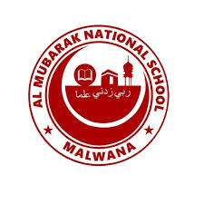

Welcome to Al-Mubarak National School, Malwana
Founded in 1922, Al-Mubarak National School, Malwana stands as a proud pillar of education in the Western Province of Sri Lanka. For over a century, our school has been dedicated to shaping disciplined, knowledgeable, and compassionate students who are ready to take on life’s challenges with confidence. Today, Al-Mubarak is a thriving 1AB National School with over 2,500 students and 70+ passionate teachers, offering education from Grade 6 to Advanced Level across Science, Commerce, Arts, and Technology streams. Our campus features modern facilities, including smart classrooms, a technical laboratory, and a newly opened three-storey building with an auditorium—reflecting our commitment to quality education and innovation. At Al-Mubarak, we believe in academic excellence, moral values, and holistic growth—empowering every student to become a responsible, confident, and forward-thinking citizen.
We believe in holistic education. Along with academics, students actively participate in:
These experiences build confidence, teamwork, and a sense of social responsibility—values that last a lifetime.
Our greatest strength lies in our highly qualified, dedicated, and caring team of teachers who form the heart of Al-Mubarak National School, Malwana. Each member of our staff is more than just an educator — they are mentors, motivators, and lifelong guides who play a vital role in shaping the minds and hearts of our students. With years of experience and a deep passion for teaching, our teachers create a nurturing and inclusive environment where every child feels valued, supported, and inspired to learn. They combine modern teaching techniques with traditional values, ensuring that students not only gain knowledge but also develop discipline, empathy, and confidence. Beyond the classroom, our teachers take a personal interest in each student’s growth — offering guidance in academics, leadership, and personal development. They encourage curiosity, celebrate achievements, and help students overcome challenges with patience and understanding. At Al-Mubarak, our teachers don’t just prepare students for exams — they prepare them for life. Through their dedication and example, they instill in our learners the values of respect, integrity, and lifelong learning, helping them become well-rounded individuals ready to make a positive impact in the world.